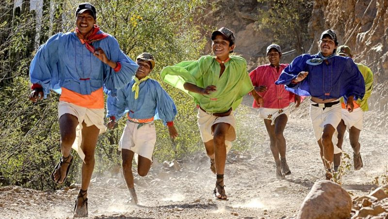

Son la principal etnia indígena del estado, se denominan a sí mismos como Rarámuri que significa "pie corredor" en su lengua nativa, lo cual hace referencia a su particular habilidad de correr grandes distancias. Habitan en amplios sectores de la Sierra Madre Occidental, a la que se da localmente el nombre de Sierra Tarahumara, sin embargo, la emigración por razones principalmente económicas han dado lugar a importantes asentamientos en otros sitios del estado, principalmente las ciudades de Chihuahua y Ciudad Juárez.
El significado exacto de la palabra "Rarámuri" es discutido en la actualidad, pues al hablar con integrantes de dicho grupo cultural, muchos niegan que signifique "Pie corredor" y dicen que significa "la gente", en contraposición a la palabra "chabochi" que hace referencia a los mestizos y al hombre blanco.
Según las creencias religiosas de dicho grupo, Onorúame (Dios), creó a los Rarámuri dándole a una figura de barro masculina tres soplidos para darle vida, soplidos que representan las tres almas que en su creencia poseen los varones y dando cuatro soplidos a una figura de barro femenina, proporcionándole cuatro almas (una más que los hombres, pues la mujer posee la posibilidad de parir). El hermano de Onorúame, pretendió imitarlo haciendo figurillas de cenizas, pero cuando sopló para darles vida, solamente lo hizo una vez creando así a los "chabochis" (mestizos y caucásicos), que dentro de sus creencias solamente poseen un alma.
Es por esto, que muchos creen que la palabra "chabochi" hace referencia a "los hijos del diablo", pero su significado exacto está diluido, pues muchos Rarámuris dicen que solamente significa "los de pelusa en la cara" (haciendo referencia a las barbas).
